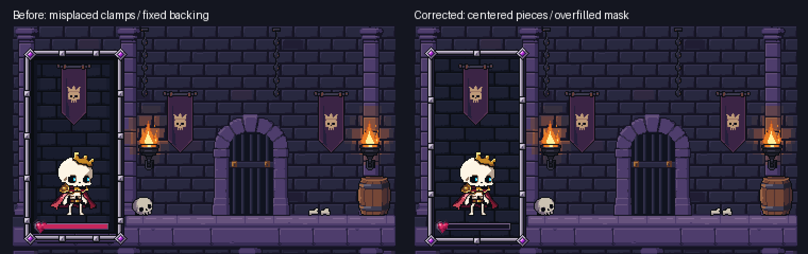
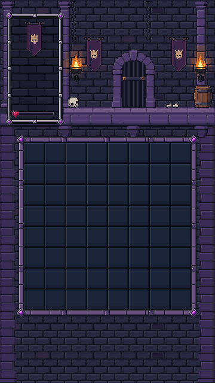
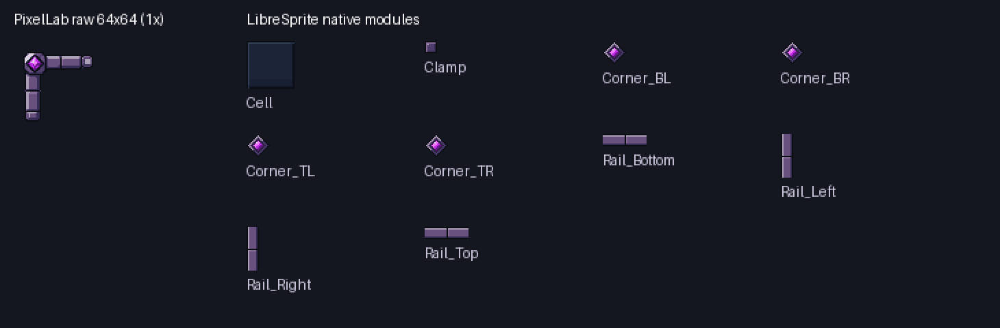

Corrected portrait, then ten new board modules from PixelLab and LibreSprite. These are actual Unity captures from the isolated art preview. Production gameplay is unchanged. Stopped before Stage12; no merge.
The former connector offsets came from unequal transparent padding. Both sides now share native centerlines. A tiled backing extends beyond the anchored mask on every side. The red fill on the old capture is a temporary HP diagnostic; the new capture shows the unchanged empty shell.

Passed: four portrait sizes at 1×/3×, complete interior coverage, no spill, matched left/right rows, native corners, and recovery from transient undersize.
35px pitch · 64 cells · complete borders · original approved environment pixels preserved.
Empty board — delivered preview scene

Temporary unchanged Rattlebones readability specimen

One paid source, five generations. Balance: 999.20. No additional generation, gameplay character or gem edits. Editable sources: corner, rail, cell.
Native 1× kit · Exact pixel and palette checks · Unity validator receipt